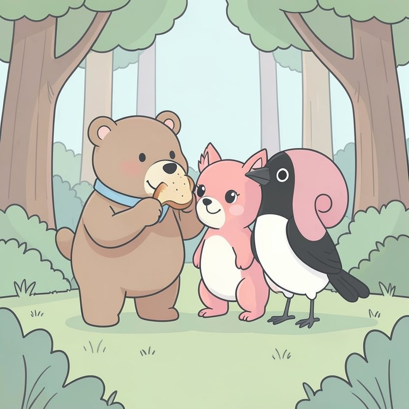

Titistoire › Les Étoiles (3-6 ans)
Nestor et le louveteau du bout du chemin
Une histoire de Nestor l'ourson pour parler de : ne pas juger trop vite.

▶ Écouter et regarder l'histoire
Gratuit, sans inscription : la voix lit, le texte suit mot à mot, les images tournent comme dans un album.
Le texte de l'histoire
Dans la forêt des Quatre-Chênes, on raconte beaucoup de choses. On raconte que la rivière chatouille. On raconte que la lune est une noisette. Et l'on chuchote qu'au bout du chemin des sapins, il y a un loup.
« Un loup avec des dents comme ça ! » assure Noisette l'écureuil en écartant les bras. « Et des yeux jaunes ! » jacasse Margot la pie. Personne ne l'a jamais vu. Mais tout le monde le sait.
Nestor, lui, écoute en mâchonnant son goûter. « Hmm… Et il est méchant ? » « Évidemment ! s'écrient-elles en chœur. C'est un loup ! »
Un jour, Nestor rentre de chez sa mamie, un panier de pain au miel sous le bras. Il fait un petit détour pour cueillir des mûres. Puis un autre. Et de mûre en mûre, le voilà… sur le chemin des sapins.
Ici, les arbres se serrent les uns contre les autres. Il fait sombre. Derrière un tronc moussu, deux oreilles grises dépassent. Puis deux yeux. Jaunes.
Nestor se fige. Le panier tremble au bout de sa patte. Les oreilles grises tremblent aussi. On dirait même qu'elles ont encore plus peur que lui.
« Tu… tu vas pas crier ? » souffle une petite voix. Et de derrière le sapin sort un louveteau. Tout petit, tout maigrichon, avec des pattes trop grandes pour lui.
« D'habitude, ils crient. Ou ils me lancent des pommes de pin. Je m'appelle Loupiot. » Sa truffe remue : ça sent le pain au miel. Son ventre gargouille. Grrrouik.
Nestor observe ses dents. Elles sont petites et pointues, c'est vrai. Mais pour l'instant, elles ne servent qu'à mordiller sa lèvre, comme quand on se retient de pleurer.
Alors Nestor repense à tout ce qu'on raconte. Puis il regarde ce qu'il voit. Et ce qu'il voit, c'est quelqu'un qui a faim.
« Hmm. Tu aimes le pain au miel ? » « Je sais pas. J'en ai jamais goûté. » Nestor s'installe sur une souche et partage sa tranche en deux. La plus grosse moitié, il la tend à Loupiot.
Le louveteau savoure, les yeux fermés, du miel jusqu'aux moustaches. « C'est comme manger du soleil », soupire-t-il. Et sa queue frétille si fort que les aiguilles de sapin s'envolent en tourbillon.
Ils bavardent tout l'après-midi. Loupiot connaît une ribambelle de choses : reconnaître le vent, marcher sans un bruit, et chanter à la lune. « Aoooouh ! » « Hmmmouh ? » essaie Nestor. Ils pouffent de rire.
« Pourquoi tu ne viens jamais à la clairière ? » Les oreilles de Loupiot retombent. « J'y suis allé, une fois. Ils se sont tous sauvés. Alors je regarde de loin. Vous avez l'air de bien vous amuser. »
Nestor sent son cœur se serrer. Il pose une grosse patte sur l'épaule de Loupiot. « Demain, tu viens avec moi. »
Le lendemain, quand ils arrivent à la clairière, c'est la débandade. « LE LOUP ! » Noisette file en haut de son arbre. Margot s'envole. Les lapins plongent dans leurs terriers ; il n'en dépasse que deux queues blanches.
Loupiot couche les oreilles. « Tu vois… », murmure-t-il. Il fait déjà demi-tour, la queue basse. Mais une grosse patte le retient.
Nestor n'aime pas parler devant tout le monde. Sa voix tremble un peu, mais il se tient bien droit. « Vous l'avez déjà vu mordre ? Non. Vous lui avez déjà parlé ? Non plus. Moi, oui. Il s'appelle Loupiot. Et c'est mon ami. »
Un long silence. Puis un museau rose pointe hors d'un terrier. C'est Pompon, le plus petit des lapins, celui qui n'a pas encore appris à avoir peur.
Il s'approche à petits bonds. Loupiot s'aplatit dans l'herbe pour paraître moins grand. Pompon lui touche le bout du nez. « Il est tout mouillé ! » Et le lapereau roule sur le dos en riant aux éclats.
Alors Noisette redescend d'une branche. Puis de deux. Margot se pose, pas trop près quand même. « Hum, toussote-t-elle. Il sait jouer à chat, ton loup ? » « Je sais jouer à LOUP ! » réplique Loupiot.
Jamais on n'a autant couru, autant ri dans la clairière. Loupiot gagne à tous les coups, alors on décide qu'il comptera jusqu'à vingt au lieu de dix. Il trouve ça très juste.
Le soir, il y a du pain au miel pour tout le monde, Loupiot le premier. Nestor en a apporté deux paniers. Il avait prévu.
Dans la forêt des Quatre-Chênes, on raconte toujours beaucoup de choses. Mais maintenant, quand un « Aoooouh ! » monte au bout du chemin, on dit : « Tiens, c'est Loupiot qui nous appelle pour jouer. »